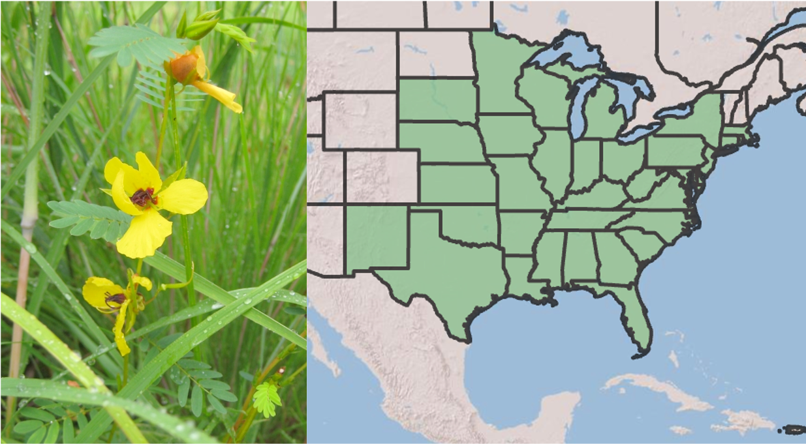

setwd("C:/Users/chenjoe/BIO209W/Rwork")10 Mutualisms: Do ants protect pea plants?

10.1 Goals
Do animals protect plants? If so, why and under what conditions would they do that? In this chapter, you’ll investigate these questions as the apply to partridge pea (Chamaecrista fasciculata Figure 10.1).
In this chapter, you will,
- evaluate whether or in what ways species help each other,
- develop testable hypotheses about species interactions,
- generate quantitative predictions from your hypothesis,
- refine your data display expertise, and
- start to develop a greater understanding and intuition for species interactions.
10.2 Preparatory steps
- General background on mutualisms: Download the slides and watch the video on mutualisms (4c) before proceeding.
- For a quick summary on the species and experiment in this chapter, watch this five minute video. (This was presented at the 2021 Annual Conference of the Botanical Society of America by a Miami graduate student, Laura Fehling).
- Data: go to our class data repository, and download
ArthropodObservations.csv.- Make sure the file remains in the same simple format, “comma separated values” (.csv).
- Put
ArthropodObservations.csvin your working directory,Rwork. - Continue to make sure the file remains in the same simple format, “comma separated values” (.csv).
- Find out what you need for the deliverables.
10.3 Background on partridge pea and friends
Ecological mutualisms are mutually beneficial interactions between species (+,+). Mutualisms between terrestrial plants and fungi are hundreds of millions of years old and underlie Earth’s forests and grasslands. Symbiotic mutualisms between corals (which are animals) and dinoflagellates (a type of alga) allow for the coral reefs that structure Earth’s shallow tropical seas. Mutualisms are all around us, and often go underappreciated. This chapter brings our attention to a small annual plant that has mutualisms with four completely different types of organisms, with multiple species within each of those types.
One good way to think about mutualisms is to identify the types of rewards that species give to each other. Often those rewards are resources, such as when a plant gives sugar to mycorrhizal fungi and the fungus gives phosphorous to the plant. Sometimes a reward is a service, as when a bumblebee pollinates a plant by spreading pollen to the stigma of a female flower in return for nectar from the plant. In many parts of the world, acacia trees provide ants with hollow thorns in which they can build nests, and ants defend the trees from herbivores of all kinds, from caterpillars to elephants. In this case, the ants provide the service of defense, in return for a resource (the physical structure of a hollow thorn).
For her Master’s thesis at Miami university, Laura Fehling investigated the multimutualist interactions of partridge pea (Fehling 2022). Partridge pea (Chamaecrista fasciculata, “cam-ee-crist’-a fa-sick’-u-la’-ta”) has four mutualist partner groups: arbuscular mycorrhizal fungi, rhizobia bacteria (Bradyrhizobium sp.), ants, and pollinators Figure 10.2.

Chamaecrista fasciculata is an annual legume1 that is native to the Midwestern and Eastern United States often occurring in prairies, old fields, and disturbed sites (Fehling 2022 and references therein). The C. fasciculata mutualist system is ideal for studying multiple mutualist effects given the diversity and manipulability of its partners. While all partners receive a form of plant carbon, each benefits the plant with a unique nutrition, protection, or transportation reward. These partners further represent diversity in their (i) physical association (symbiotic vs non-symbiotic), (ii) degree of obligacy, and (iii) specificity to the focal species. Mycorrhizae provide increased uptake of nutrients (esp. phosphorous) and water provided to the plant, and generally have beneficial effects on plant fitness as their supply of nutrients supports increased plant growth. Rhizobia form nodules in the roots of plants where they fix nitrogen into a form usable by plants, and the degree of benefits provided to the plant can vary. C. fasciculata depends primarily on bees for pollen transfer but can self-pollinate at very low rates (references in Fehling (2022)).
In addition to producing showy flowers to attract bees, establishing mycorrhizae, and rhizobial nodes, Chamaecrista fasciculata also produce nectar on their leaves in order to attract ants. At the base of the petiole of each compound leaf, they produce a small extrafloral nectary (EFN) which produces nectar to attract ants for defense against herbivory. Unlike acacia trees, the actual benefit of ants to the plant is not always clear. Sometimes they seem to help, and sometimes it is not clear whether they do.
Whether this behavior by ants actually helps a plant may depend on several things including
- other interactions that the plant has,
- the environmental conditions, and
- how effective the ants are at removing herbivores.
As you saw in her video (prep.steps above), Laura set an experiment to test how mutualists interact and how the environmnet alters those interactions. In 2021, she established individual replicate C. fasciculata plants with and without Rhizobia, mycorrhizal fungi, ants, and dry and moist soils, for a total of 16 different experimental combinations (2 x 2 x 2 x 2). Along with lots of other data that Laura collected, she and her undergraduate field assistant observed and counted herbivorous insects every week all summer for two minutes in the morning and in the afternoon. You will analyze these data, the data on total herbivorous insects abundance.
10.4 Your hypothesis and predictions
The data you have available are total counts of herbivores on each plant and the combination of experimental treatments associated with each plant.
What you now know, based on the above text and preparatory information:
- Half the plants have ants as normal, while half were prevented from having any ants.
- In total, there were 16 combinations of conditions (what they?).
- What mycorrhizal fungi and Rhizobia provide to plants (refer to lecture).
- What ants are thought to do.
- Your data: the abundance of herbivores remaining on plants.
Questions you might consider:
- Which plants would be the healthiest and potentially most attractive to herbivores?
- Half the plants receive extra water - how might that influence the plants, the ants and ant behavior?
- How will mycorrhizal fungi (AMF) and rhizobia affect plants and how might those affects alter ant behavior?
- will the be some combination of factors (water, AMF, rhizobia) that alter the effects of ants?
Think about what you know and ponder the above questions. Then generate a hypothesis about how various conditions might affect how ants protect plants. Recall a scientific hypothesis is a idea about how you think the world works. Remember that a hypothesis differs from predictions: a hypothesis is a mechanism that might operate generally with lots of different organisms, and it is not an observed result in a particular system.
After you have written down your hypothesis, write down a prediction that follows logically and that you can evaluate with the data we have (herbivore abundance and experimental treatments). Once you have a prediction, sketch a graph of what your data would look like if your hypothesized mechanism operated in this partridge pea system.
10.5 Data analysis
First, open R using RStudio, and set your working directory. You can do this in two ways:
- using the Session menu in RStudio, or
- with code such as this, in which you customize it to your computer:
You can confirm or get your current working directory using this:
getwd()[1] "/Users/stevenmh/projects/intro_to_ecology"so when I do that, you can see my working directory is the one for this book.
Before you proceed, make sure your working directory is your Rwork directory.
Second, use RStudio to create a new file of the type “R script”. Save it using a name that reflects this chapter, and end the file name with “.R” or “.r”.
Third, add a comment as a brief description of the script, and load any R packages you know you will need.
## This script is for chapter XX in Hank's Intro to Ecology primer.
## We always use...
library(tidyverse)
## or usually just ggplot2 and dplyr packages within the tidyverse.10.5.1 The data
Make sure that your data file is in your Rwork directory. and is still just a CSV file.
Open the data file (.csv file) in a spreadsheet application, a text editor, or in RStudio. Do not save it the file the spreadsheet application because it will try to change the format.
- With the file open, learn what is on the first several lines. Often, the first line or two will have metadata or information about the data (data about the data).
- Below the metadata, you will see column headings, separated by commas, because the data are CSV or comma-separated-values.
- Below the column headins are the data, with columns separated by commas.
Close the data file, and do not save it. If you save it, chances are good that the application will try to save it in a different format.
Import the data or read the data into R. Here is code for that. You will notice that we use a function that expects a CSV file. You will also notice that we use an argument to tell R how many lines of metadata to skip so it reads only the data and its column headings.
## NOTE that we skip the first 2 lines because they are metadata
d <- read.csv("ArthropodObservations.csv",
skip=2)Look at your data with one of these two:
# glimpse(d)
# or
str(d)'data.frame': 225 obs. of 5 variables:
$ AMF : chr "no_AMF" "no_AMF" "no_AMF" "no_AMF" ...
$ Rhizobia: chr "no_Rhiz" "no_Rhiz" "no_Rhiz" "no_Rhiz" ...
$ Ants : chr "no_Ants" "no_Ants" "no_Ants" "no_Ants" ...
$ Drought : chr "Normal" "Normal" "Normal" "Normal" ...
$ Total : int 1 1 0 1 1 0 3 1 2 2 ...AMFindicates whether a plant did have or did not have arbuscular mycorrhizal fungi.Rhizobiaindicates whether a plant had or did not have symbiotic nitrogen-fixing bacteria.Antsindicates whether ants did or did not have access to the plant.Totalis the total number of herbivores observed during the sample periods.
10.6 Display the data to evaluate your predictions
Use ggplot(data= ..., aes(x=..., y=...)) to create a data display that has the same structure or format as your sketched prediction. You can take advantage of features you have used before, including,
- more than one independent variable (IV_1, IV_2, etc.),
- a box-and-whisker plot of your dependent variable,
- a notch in the box-and-whisker plot that gives you an approximate confidence interval on the median.
Here is a generic example:
ggplot(data=DATA, aes(x=IV_1, y=DV, color=IV_2)) +
geom_boxplot(notch = TRUE) +
facet_grid( IV_3 ~ IV_4)You would replace “DATA” with your data frame (d), and replace “IV_1” with one of the independent variables, such as Ants or Rhizobia.
A box-and-whisker plot shows the central 50% of the observations (the box). The median, or central value, is the line across the middle of the box The tails of the distribution are the whiskers. The notch shows an approximate confidence interval on the median. If the notches of two plots don’t overlap, that is good evidence that the two medians differ.
10.7 Deliverables
Two documents:
One document is the script you use to confirm your directory, load packages, import data, and create your graph.
The second document must include:
- Your hypothesis.
- Your prediction, in writing.
- Your prediction, as a graph.
- A plot of data that has the same structure or format as your sketched prediction.
- A paragraph that includes
- an interpretation of your results,
- whether your results are consistent with your predictions, and in what ways,
- a short statement about what your results say about the hypothesis.
Legumes are a group of plants including peas and beans that typically form rhizobia mutualisms.↩︎